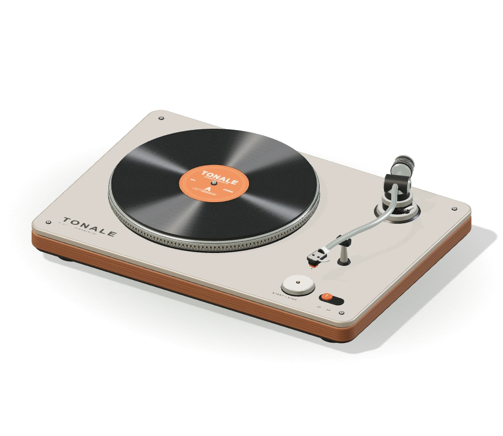

T–01
Materia
sonora.
Un giradischi in noce e alluminio.
Tocca un solco per posare la puntina.

Trascina per ruotare
Sala
d’ascolto.
Due incisioni originali per il T–01. Scegli un lato e lascia scendere la puntina.